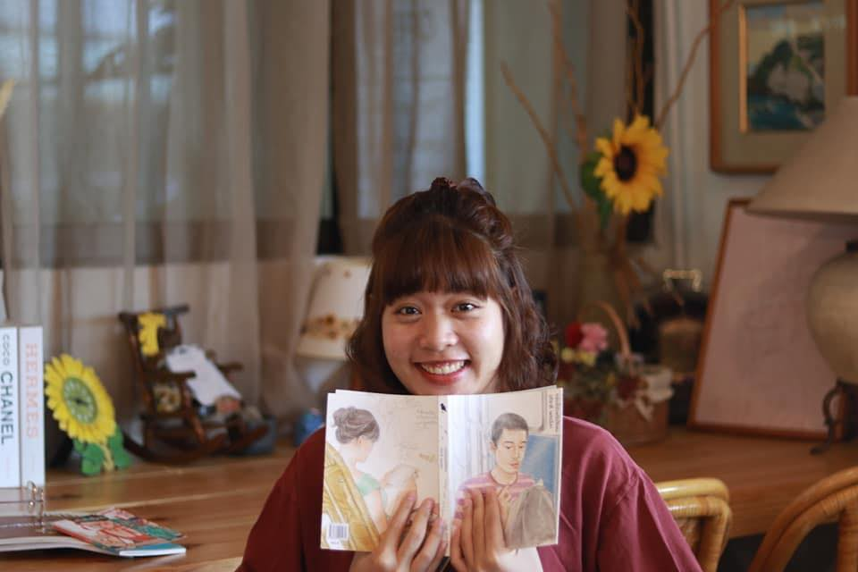

Benjakorn Tonkanya
Creative / Director / Content Creator

Summary
Dynamic and fast-learning content creator with over 4 years of experience
in producing inspiring material. Proficient in diverse storytelling
techniques and design thinking concepts, with a commitment to staying at
the forefront of industry trends. Dedicated to delivering engaging and
contemporary content that resonates with audiences, backed by a positive,
can-do attitude.
Experience
-
Director - Fat Mango Studio
Jan '23 - Present
-
Directed creative strategy for diverse content formats such as
advertising, documentaries, social media posts, long-form and
short-form videos, and corporate videos, maintaining alignment with
brand identity and objectives
-
Translated and interpreted client briefs in English and Thai
languages to ensure alignment of creative vision with client
expectations
-
Conceptualized and developed customized scripts, storyboards, and
concepts to meet client requirements
-
Lead the successful briefing of the production team and provided
support throughout pre-production once the storyboard was approved
-
Led on-set direction for numerous projects, ensuring the creative
vision was executed effectively and efficiently
-
Successfully managed multiple creative projects simultaneously,
meeting all deadlines and exceeding client expectations
-
Creative / Video Editor - The One Enterprise(One31)
Jan '20 - Mar '22
-
Collaborated with cross-functional teams to strategize and execute
content production initiatives to enhance promotion of drama series
-
Created and edited engaging video content including scoops, music
videos, trailers, and online content for distribution on various
platforms such as Youtube, Facebook, Instagram, and television
-
Managed the entire production process including script writing and
overseeing editing for video content
-
Producer/Creative - Innovative Media Production
-
Developed and produced the "Human of IMI" content series for the
Innovative Media Production BU page.
-
Script Writer Internship - The One Enterprise(One31)
JAug '20 - Dec '20
-
Contributed to the scriptwriting team for the Thai romantic drama
"Deja Vu"
Education
-
Bangkok University
Bachelor's Degree
- Communication Arts, Innovative media production · Grade: 3.65
- Highest scholarship student / First Class Honors
Skills
Art Direction · Concept Development · Content Creation · Creative Problem
Solving · Illustration · Graphic Design · Storyboarding · Video Editing
Other